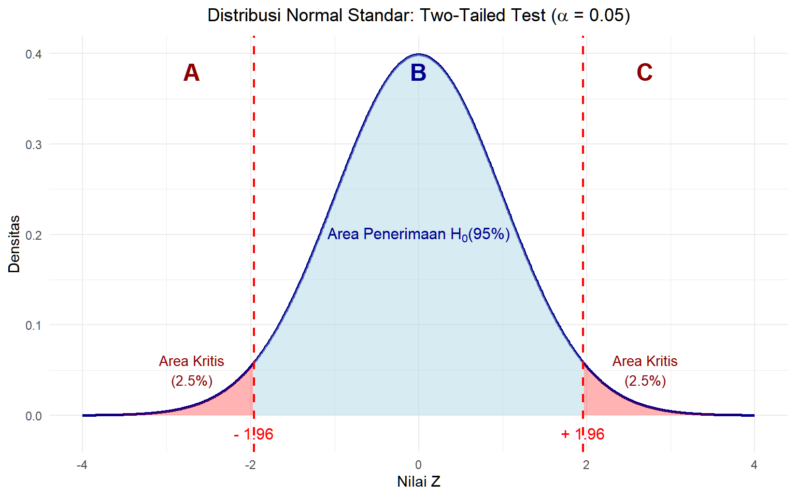
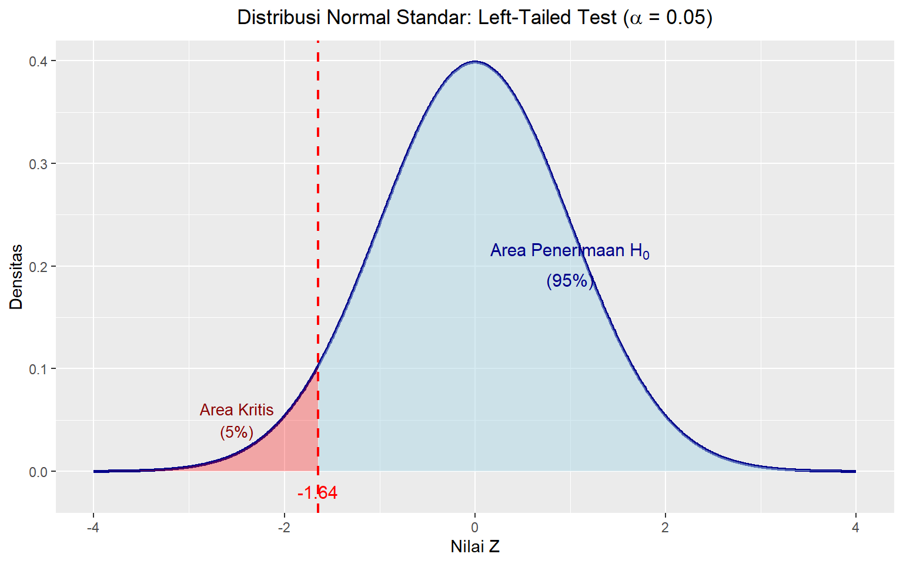
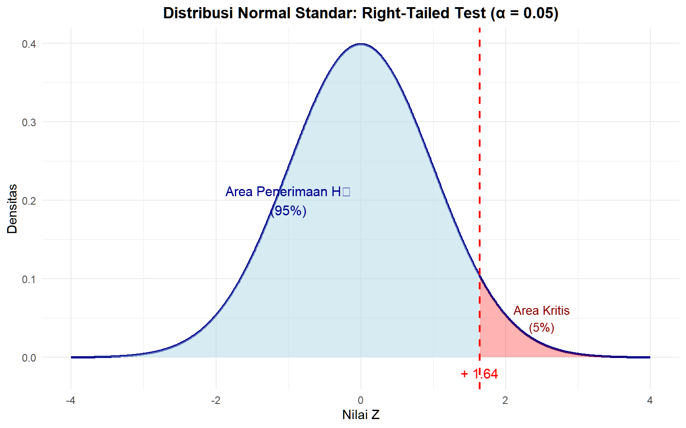

Modul 5 Uji Hipotesis Satu Populasi
Setelah mempelajari modul ini, Anda diharapkan dapat menghasilkan uji hipotesis satu populasi dengan menggunakan perangkat lunak komputer STP-6.2
5.1 Pendahuluan
Uji hipotesis adalah salah satu teknik dalam analisis statistik inferensial yang memperkirakan parameter melalui pernyataan-pernyataan dugaan atau hipotesis. Hipotesis di sini adalah pernyataan yang mengandung dugaan bahwa nilai parameter adalah sama dengan suatu nilai atau berbeda. Hipotesis yang sama dengan suatu nilai kita sebut dengan hipotesis kosong (null hypothesis), sementara yang berbeda disebut hipotesis alternatif (alternative hypothesis)
5.2 Perangkat Lunak dan Pustaka (Libraries)
Seperti biasa, kita perlu memuat pustaka (libraries) yang diperlukan dalam pengolahan data kita.
Dalam modul ini kita akan menggunakan sebuah pustaka bernama stats yang merupakan pustaka khusus untuk perhitungan-perhitungan statistik dan juga penghasil angka acak.
Biasanya pustaka stats sudah termuat secara bawaan (default) saat kita menjalankan R melalui RStudio. Untuk mengecek apakah suatu pustaka sudah termuat ketika kita menjalankan R, tulis perintah berikut.
"package:{nama pustaka}" %in% search() # ganti {nama pustaka} dengan nama pustaka yang ingin dicari
# Contoh perintah untuk mengecek apakah 'stats' sudah dimuat
"package: stats" %in% search()Kita juga akan belajar menulis persamaan \(H_0\) dan \(H_1\) di RMarkdown. Untuk itu, kita harus memiliki paket bernama rmarkdown. Pastikan paket rmarkdown sudah terpasang dan termuat di RStudio Anda.
Aktivitas Mandiri 1
- Coba Anda cek apakah pustaka
statssudah termuat di RStudio Anda dengan menggunakan perintah yang telah diberikan. Bagaimana hasilnya? - Coba Anda cek apakah paket
rmarkdownsudah terpasang dan termuat di RStudio Anda. Jika belum, silakan pasang dengan perintah berikut.
install.packages("rmarkdown")5.3 Memuat Dataset
Kita akan menggunakan dataset gabungan keempat kampus (UBL, UNILA, UINRIL, dan ITERA) yang berisikan variabel jarak tempuh (km) dan jenis tempat tinggal saja. Pada kesempatan ini, kita akan mempelajari perintah baru untuk membuka file CSV, yakni read_csv2(). File CSV memiliki dua jenis pemisah (delimiter), yaitu titik koma (;) dan koma (,). Adanya pemisah berupa titik koma ini ini dimaksudkan untuk mengakomodasi penulisan angka desimal yang menggunakan koma (,) yang digunakan di berbagai negara, termasuk Indonesia. Adapun file CSV bawaan yang menggunakan pemisah koma (,) adalah file CSV yang dibuat untuk penulisan angka desimal menggunakan titik (.) yang lazim digunakan pada negara-negara berbahasa Inggris, seperti Amerika Serikat dan Inggris.
Perintah read_csv2() digunakan untuk membuka file CSV yang menggunakan titik koma (;) sebagai pemisah (delimiter). Dataset yang kita gunakan, data_mahasiswa.csv, menggunakan titik koma (;) sebagai pemisah (delimiter). Dengan demikian, kita harus menggunakan perintah read_csv2() untuk membuka file CSV ini.
data_mahasiswa <- read_csv2("datasets/data_mahasiswa.csv")Aktivitas Mandiri 2
Muatlah dataset data_mahasiswa.csv ke dalam RStudio Anda menggunakan perintah read_csv2() yang telah dijelaskan.
Sebelum melanjutkan analisis, ada baiknya kita memeriksa kondisi data kita terlebih dahulu dengan glimpse().
# Memeriksa kondisi data
glimpse(data_mahasiswa)
## Rows: 1,600
## Columns: 4
## $ kampus <chr> "UINRIL", "UINRIL", "UINRIL", "UINRIL", "UI…
## $ jarak_km <dbl> 19.27, 0.58, 0.56, 1.05, 1.69, 7.91, 2.58, …
## $ jenis_tinggal <chr> "Rumah Bersama Saudara", "Kos Sendiri", "Ko…
## $ tipe_tinggal_baku <chr> "Rumah Keluarga/Pribadi", "Kos/Asrama", "Ko…Kita memiliki empat variabel: kampus, jarak_km, jenis_tinggal dan tipe_tinggal_baku. Variabel kampus adalah variabel yang menandakan kampus dari mahasiswa yang menjadi objek sampel kita. Variabel jarak_km adalah jarak tempat tinggal mereka ke kampus masing-masing. Sementara itu variabel jenis_tinggal adalah jenis tempat tinggal yang berupa Rumah Bersama Saudara, Kos Sendiri, Rumah Mengontrak Bersama-sama, Rumah Pribadi/Rumah Keluarga, Kos Bersama-sama, Rumah Mengontrak Pribadi, Asrama, Rumah pribadi/rumah keluarga, Rumah mengontrak pribadi, Rumah mengontrak bersama-sama, Kos bersama-sama, Rumah bersama saudara, Kos sendiri, Rumah ngontrak bersama-sama, Rumah ngontrak pribadi dan distandarkan menjadi Rumah Keluarga/Pribadi, Kos/Asrama.
Tipe data juga sudah sesuai. Variabel jarak_km sudah bertipe double (<dbl>) sehingga dapat kita olah lebih lanjut.
5.4 Perkenalan: LaTeX dalam R Markdown
RStudio memiliki bentuk file lain selain .R, yakni .Rmd atau “R Markdown”. File ini adalah gabungan kemampuan eksekusi kode R dengan penulisan teks dari Markdown. Kemampuan penulisan teks tersebut mencakup kemampuan menampilkan persamaan atau simbol matematis.
Untuk menyisipkan persamaan matematis menggunakan LaTeX, kita dapat menggunakan perintah Insert > LaTeX Math > Inline Math/Display Math. Inline Math akan menyisipkan simbol matematis di dalam paragraf, sementara Display Math membuat persamaan di bagian terpisah dari paragraf.
Dalam mode Source, Inline Math disisipkan pada dua tanda $ di awal dan akhir, lalu menuliskan simbolnya di antara $ tersebut. Sementara itu, untuk Display Math kita perlu mengetikkan $$ di awal dan akhir sehingga terlihat seperti berikut.
Hasilnya adalah seperti berikut:
\[ H_0 : \mu_0 = 4 \\ H_1 : \mu_0 \ne 4 \]
Anda dapat mempelajari penulisan LaTeX selengkapnya di situs web Overleaf ini.
Aktivitas Mandiri 3
- Pastikan paket
rmarkdownsudah terpasang dan termuat di RStudio Anda. - Buat file R Markdown baru dengan mengeklik File > New File > R Markdown…
- Pada jendela yang muncul, klik Create Empty Document.
- Klik OK.
- Pada dokumen yang baru terbuka, Anda akan melihat tombol Source dan Visual. Pastikan Anda berada pada mode Source.
- Tuliskan sintaks seperti yang sudah ditampilkan sebelumnya
- Klik tombol Visual untuk melihat hasil persamaan matematis yang sudah Anda tuliskan.
- Simpan dokumen tersebut dengan nama
Prak_05_NIM_Nama.Rmd
5.5 Uji Hipotesis Satu Populasi
Pengujian hipotesis satu populasi bermakna pengujian hipotesis untuk suatu parameter dari satu buah populasi saja. Dalam kasus ini, kita memiliki dataset berupa mahasiswa-mahasiswa dari 4 kampus yang ada di Kota Bandar Lampung dan sekitarnya. Jika kita menetapkan “mahasiswa yang berkuliah di Kota Bandar Lampung dan sekitarnya” sebagai populasi, maka kita sedang melakukan uji hipotesis untuk satu populasi.
Dalam uji hipotesis satu populasi, kita ingin mengetahui apakah parameter populasi sama dengan nilai tertentu atau tidak. Nilai tertentu ini adalah nilai acuan yang bisa berasal dari teori, standar, atau dugaan awal kita.
Ada dua jenis parameter yang akan kita uji:
- Rata-rata (\(\mu\)) → misalnya, apakah rata-rata jarak mahasiswa ke kampus = 4 km?
- Proporsi (\(p\)) → misalnya, apakah proporsi mahasiswa yang tinggal di kos/asrama = 50%?
Secara umum, langkah-langkah uji hipotesis satu populasi adalah sebagai berikut.
- Merumuskan hipotesis kosong dan alternatif
- Memilih distribusi statistik, wilayah kritis, dan titik kritis
- Menghitung statistik uji
- Membandingkan hasil statistik uji dengan titik kritis
- Menarik kesimpulan
Penjelasan lebih lanjut akan dibahas dalam subbab-subbab berikut.
5.5.1 Uji Hipotesis Satu Populasi Parameter Rata-rata
Dalam kasus ini, kita akan menguji hipotesis parameter rata-rata berupa jarak mahasiswa yang berkuliah di universitas-universitas di Kota Bandar Lampung dan sekitarnya. Berdasarkan data_mahasiswa , kita dapat menghitung rata-rata statistik jarak mahasiswa yang menjadi responden. Rata-rata statistik jarak tersebut kita gunakan untuk menguji hipotesis parameter rata-rata dengan suatu nilai.
5.5.1.1 Merumuskan Hipotesis Kosong dan Alternatif
Jika dimisalkan suatu nilai tersebut adalah 4 km, maka hipotesis yang diujinya menjadi “rata-rata jarak tempat tinggal mahasiswa ke kampusnya masing-masing di Kota Bandar Lampung dan sekitarnya adalah 4 km.” Ini disebut hipotesis kosong, karena memuat kesamaan terhadap suatu nilai. Dalam bentuk matematis, hipotesis kosong tersebut ditulis sebagai berikut.
\[ H_0: \mu_{\text{jarak}} = 4 \]
Sementara itu, hipotesis alternatif memiliki dua jenis: berarah dan tidak berarah. Hipotesis alternatif berarah memiliki tanda ketidaksamaan (\(<\) atau \(>\)), sedangkan hipotesis alternatif tidak berarah memiliki tanda ketidaksamaan \(\neq\).
- \(H_1: \mu_{\text{jarak}} \neq 4\) (tidak berarah)
- \(H_1: \mu_{\text{jarak}} < 4\) (berarah ke kiri)
- \(H_1: \mu_{\text{jarak}} > 4\) (berarah ke kanan)
5.5.1.2 Memilih Distribusi Statistik, Wilayah Kritis, dan Titik Kritis
Untuk menentukan distribusi statistik, wilayah kritis, dan titik kritis, kita perlu mempertimbangkan beberapa hal, yakni ukuran sampel, tingkat signifikansi, dan arah hipotesis.
Ukuran sampel. Jika ukuran sampel besar (biasanya \(n \ge 30\)), kita menggunakan distribusi Z. Jika ukuran sampel kecil (\(n < 30\)) dan simpangan baku populasi tidak diketahui, kita menggunakan yang disebut sebagai distribusi t.
Tingkat signifikansi (sering dilambangkan dengan \(\alpha\)). Tingkat signifikansi menentukan besar wilayah kritis.
Arah hipotesis alternatif. Arah hipotesis alternatif menentukan letak wilayah kritis. Hipotesis alternatif yang memiliki tanda ketidaksamaan \(\neq\) (tak berarah) berarti memiliki wilayah kritis yang berada di kedua sisi kurva distribusi statistik, disebut juga sebagai uji dua ekor (two-tailed test). Sementara itu, hipotesis alternatif yang memiliki tanda ketidaksamaan \(<\) atau \(>\) (berarah) berarti memiliki wilayah kritis yang berada di salah satu sisi kurva distribusi statistik, disebut juga sebagai uji satu ekor (one-tailed test).
Titik kritis adalah nilai yang menjadi pembatas antara wilayah kritis dengan wilayah gagal tolak \(H_0\). Posisinya sangat bergantung pada arah hipotesis alternatif.
5.5.1.2.1 Titik kritis untuk uji dua ekor (tak berarah)
Untuk menentukan titik kritis pada uji dua ekor, kita perlu menentukan nilai \(\alpha\) terlebih dahulu kemudian membagi dua nilai tersebut. Nilai \(\frac{\alpha}{2}\) kita tempatkan di sisi kiri dan kanan distribusi statistik kita, sehingga disebut uji dua ekor (two-tailed test). Perhatikan Gambar 5.1. Gambar tersebut menunjukkan bahwa untuk uji two-tailed dengan \(\alpha\) = 0.05, area kritis terbagi menjadi dua bagian (masing-masing 2.5%) di kedua ekor distribusi. Titik kritisnya adalah pembatas dari area penerimaan \(H_0\) dengan area kritis di sisi kiri dan kanan distribusi statistik.

Gambar 5.1: Distribusi Normal dengan Area Kritis Two-Tailed (α = 0.05)
Untuk mencari nilai kritisnya, kita bisa menggunakan fungsi qnorm(). Fungsi ini akan mengambil argumen berupa nilai probabilitas yang dimulai dari kiri kurva. Misalnya, untuk menghitung titik kritis ekor kiri dari Gambar 5.1, kita perlu menentukan nilai probabilitas yang dimulai dari kiri kurva hingga titik kritis ekor kiri, yakni area A. Nilai probabilitasnya adalah 2,5% atau 0,025. Maka, titik kritis ekor kiri adalah qnorm(0.025).
Sementara itu, untuk ekor kanan, kita perlu menentukan nilai probabilitas yang dimulai dari kiri kurva hingga titik kritis ekor kanan, yakni area A ditambah area B. Nilai probabilitasnya adalah 0,025 + 0,95 = 0,975. Maka, titik kritis ekor kanan adalah qnorm(0.975).
Aktivitas Mandiri 4
- Tentukan titik kritis ekor kiri untuk nilai \(\alpha = 0{,}10\).
- Tentukan titik kritis ekor kanan untuk nilai \(\alpha = 0{,}20\).
5.5.1.2.2 Titik Kritis untuk uji satu ekor (berarah)
Menentukan nilai kritis untuk uji satu tidak jauh berbeda jika kita sudah memahami prinsip penentuan titik kritis pada uji dua ekor. Perbedaannya terletak pada nilai probabilitas yang digunakan. Pada uji dua ekor, kita membagi dua nilai \(\alpha\) untuk menentukan nilai probabilitas pada masing-masing ekor. Sementara itu, pada uji satu ekor, kita tidak membagi dua nilai \(\alpha\) karena seluruh nilai \(\alpha\) ditempatkan pada satu ekor saja.
Misalnya, kita menggunakan \(\alpha\) = 5% pada uji ekor kiri, maka perintah untuk menghitung titik kritis kita adalah qnorm(0.05).

Gambar 5.2: Distribusi Normal dengan Area Kritis Left-Tailed (α = 0.05)
Sementara itu, jika kita menggunakan uji ekor kanan, nilai argumen qnorm() kita adalah 1 - \(\alpha\) kita. Ini sama prinsipnya dengan menghitung besar area A + B (lihat Gambar 5.1) dengan mengetahui nilai area C. Untuk nilai \(\alpha\) = 5%, titik kritis ekor kanannya adalah qnorm(1 - 0.05) (Gambar ??)

Gambar 5.3: Distribusi Normal dengan Area Kritis Right-Tailed (α = 0.05)
5.5.1.3 Menghitung Statistik Uji
Untuk menghitung nilai statistik uji di R, kita akan membuat sebuah fungsi khusus. Dengan adanya fungsi ini, kita tidak perlu lagi melakukan perhitungan manual setiap kali menguji hipotesis. Fungsi ini akan menerima masukan/argumen berupa rata-rata sampel, rata-rata hipotesis/nilai acuan, simpangan baku sampel, dan ukuran sampel, kemudian mengembalikan nilai statistik uji Z.
# Membuat fungsi uji hipotesis (hypothesis testing, ht) untuk rata-rata (mean)
# dengan 1 populasi (1pop)
# Keterangan input:
# - xbar : statistik rata-rata
# - mu : parameter rata-rata
# - sd : statistik simpangan baku
# - n : ukuran sampel
ht_mean_1pop <- function(xbar, mu, sd, n) {
se <- sd / sqrt(n) # menghitung standard error untuk rata-rata
z_hitung <- (xbar - mu) / se # menghitung nilai Z dari statistik
return(z_hitung)
}Setelah fungsi dibuat, kita harus mendeklarasikan variabel-variabel yang akan digunakan. Variabel-variabel ini akan dipakai langsung sebagai input fungsi uji hipotesis. Dengan mendeklarasikannya lebih dulu, kita memastikan semua nilai yang diperlukan untuk perhitungan sudah tersedia dengan jelas dan proses penghitungan menjadi lebih rapi.
# Mendeklarasikan variabel-variabel yang akan diuji
# Menghitung rata-rata dari kolom jarak_km pada data data_mahasiswa.
sample_mean <- mean(data_mahasiswa$jarak_km)
# Nilai hipotesis μ₀ yang ingin diuji.
pop_mean <- 4.0
# Menghitung simpangan baku dari kolom jarak_km pada data data_mahasiswa.
sample_sd <- sd(data_mahasiswa$jarak_km)
# Menghasilkan data frame ringkasan dataset dengan menghitung jumlah mahasiswa sebagai ukuran sampel
ukuran_sampel <- data_mahasiswa |>
summarize(ukuran_sampel = n())
# Menyimpan angka jumlah mahasiswa sebagai variabel n
# mengekstrak angka dari tabel menjadi nilai tunggal (scalar) agar bisa
# dipakai dalam perhitungan berikutnya.
ukuran_sampel <- ukuran_sampel$ukuran_sampel
# Menampilkan variabel-variabel yang akan diuji
cat(
"Rata-rata jarak sampel adalah", sample_mean, "km.",
"\nParameter rata-rata jarak yang diuji adalah", pop_mean, "km.",
"\nSimpangan baku jarak sampel adalah", sample_sd, "km.",
"\nUkuran sampel adalah", ukuran_sampel, "orang."
)Aktivitas Mandiri 6
Jalankan perintah-perintah untuk menghasilkan variabel masukan pengujian hipotesis rata-rata satu populasi seperti yang sudah ditampilkan sebelumnya.
5.5.1.4 Menarik Kesimpulan
Langkah terakhir adalah menarik kesimpulan berdasarkan perbandingan antara nilai statistik uji dengan titik kritis. Berikut adalah kondisi-kondisi yang menyebabkan kita gagal menolak \(H_0\):
- Untuk uji dua ekor, jika nilai statistik uji (absolut) lebih kecil dari titik kritis (absolut). Artinya perbedaan yang terlihat kemungkinan hanya kebetulan sampel.
- Untuk uji satu ekor kiri, jika nilai statistik uji (tidak absolut) lebih besar atau sama dengan titik kritis (tidak absolut).
- Untuk uji satu ekor kanan, jika nilai statistik uji (tidak absolut) lebih kecil atau sama dengan titik kritis (tidak absolut).
Dalam R, kita dapat menuliskan kondisi-kondisi tersebut dalam bentuk pernyataan if-else bertingkat. Misalnya, kita akan menguji hipotesis rata-rata jarak tempuh mahasiswa apakah lebih kecil dari 4 km dengan tingkat signifikansi 5%. Ini berarti jenis pengujian yang kita akan lakukan adalah uji satu ekor kiri dengan nilai \(\alpha = 0.05\).
# Menghitung nilai statistik uji Z
z_mean_jarak <- ht_mean_1pop(sample_mean, pop_mean, sample_sd, ukuran_sampel)
# Menentukan jenis pengujian
jenis_uji <- "satu ekor kiri"
# Menentukan tingkat signifikansi
alpha <- 0.05
# Menentukan apakah hipotesis kosong ditolak atau gagal ditolak
if (jenis_uji == "dua ekor") {
if (abs(z_mean_jarak) < abs(qnorm(alpha / 2))) {
tolak_h0 <- FALSE
cat(
"gagal menolak hipotesis kosong. Perbedaan rata-rata sampel",
round(sample_mean, 2), "dengan", pop_mean, "hanyalah kebetulan"
)
} else {
tolak_h0 <- TRUE
cat(
"menolak hipotesis kosong. Rata-rata jarak pada sampel mahasiswa sebesar",
round(sample_mean, 2), "km menunjukkan perbedaan yang signifikan"
)
}
} else if (jenis_uji == "satu ekor kiri") {
if (z_mean_jarak > qnorm(alpha)) {
tolak_h0 <- FALSE
cat(
"gagal menolak hipotesis kosong. Perbedaan rata-rata sampel",
round(sample_mean, 2), "dengan", pop_mean, "hanyalah kebetulan"
)
} else {
tolak_h0 <- TRUE
cat(
"menolak hipotesis kosong. Rata-rata jarak pada sampel mahasiswa sebesar",
round(sample_mean, 2), "km menunjukkan perbedaan yang signifikan"
)
}
} else if (jenis_uji == "satu ekor kanan") {
if (z_mean_jarak < qnorm(1 - alpha)) {
tolak_h0 <- FALSE
cat(
"gagal menolak hipotesis kosong. Perbedaan rata-rata sampel",
round(sample_mean, 2), "dengan", pop_mean, "hanyalah kebetulan"
)
} else {
tolak_h0 <- TRUE
cat(
"menolak hipotesis kosong. Rata-rata jarak pada sampel mahasiswa sebesar",
round(sample_mean, 2), "km menunjukkan perbedaan yang signifikan"
)
}
}Aktivitas Mandiri 7
- Hitung nilai statistik uji Z untuk rata-rata jarak tempuh mahasiswa apakah lebih besar dari 3 km dengan tingkat signifikansi 5%. Rumuskan hipotesis kosong dan alternatifnya, tentukan jenis ujinya, lalu hitung nilai statistik uji Z.
- Tentukan apakah hipotesis kosong ditolak atau gagal ditolak.
5.5.2 Uji Hipotesis Satu Populasi Parameter Proporsi
Proporsi adalah perbandingan jumlah elemen yang memenuhi suatu kriteria terhadap jumlah total. Misalnya, dalam kasus mahasiswa, kita bisa melihat proporsi mahasiswa yang tinggal di kos/asrama dibandingkan dengan seluruh mahasiswa dalam sampel.
Pengujian proporsi bermanfaat ketika kita ingin menguji apakah proporsi sampel yang kita peroleh berbeda secara signifikan dari nilai proporsi populasi yang diasumsikan. Contoh kasusnya adalah: “Apakah benar 50% mahasiswa di Bandar Lampung tinggal di kos/asrama?” Jika hasil sampel kita menunjukkan 47% atau 55%, kita perlu uji hipotesis untuk menentukan apakah perbedaan tersebut kebetulan atau memang signifikan.
5.5.2.1 Merumuskan hipotesis kosong dan alternatif
Sama seperti pada parameter rata-rata, langkah pertama uji hipotesis proporsi adalah merumuskan hipotesis kosong dan hipotesis alternatif. Hipotesis kosong (\(H_0\)) menyatakan bahwa proporsi populasi sama dengan suatu nilai tertentu, sedangkan hipotesis alternatif (\(H_1\)) menyatakan bahwa proporsi berbeda dari nilai tersebut.
Misalnya, kita ingin menguji apakah proporsi mahasiswa yang tinggal di kos/asrama sama dengan 50%. Dalam bentuk matematis, hipotesis kosong ditulis sebagai berikut.
\[ H_0: p_{\text{kos/asrama}} = 0{,}5 \]
Sementara itu, hipotesis alternatif bisa bersifat berarah maupun tidak berarah, bergantung pada pertanyaan penelitian yang ingin dijawab.
- \(H_1: p_{\text{kos/asrama}} \neq 0{,}5\) (tidak berarah)
- \(H_1: p_{\text{kos/asrama}} < 0{,}5\) (berarah ke kiri)
- \(H_1: p_{\text{kos/asrama}} > 0{,}5\) (berarah ke kanan)
5.5.2.2 Memilih distribusi statistik, wilayah kritis, dan titik Kritis
Prinsip pemilihan distribusi statistik, penentuan wilayah kritis, dan perhitungan titik kritis pada uji proporsi sama persis dengan yang sudah dibahas pada uji parameter rata-rata (lihat Subbab 5.5.1.2). Perbedaannya hanya terletak pada rumus statistik ujinya, bukan pada cara menentukan titik kritisnya.
Sebagai pengingat, hal-hal yang perlu dipertimbangkan tetap sama, yaitu:
- Ukuran sampel: untuk sampel besar (\(n \ge 30\)), digunakan distribusi Z.
- Tingkat signifikansi (\(\alpha\)): menentukan besar wilayah kritis.
- Arah hipotesis alternatif: menentukan letak wilayah kritis (dua ekor atau satu ekor).
Fungsi qnorm() tetap digunakan untuk menghitung titik kritis, dengan cara yang sama seperti pada uji rata-rata.
5.5.2.3 Menghitung statistik uji
Untuk menghitung nilai statistik uji di R, kita akan membuat sebuah fungsi khusus untuk proporsi. Fungsi ini menerima masukan berupa proporsi sampel (\(\hat{p}\)), proporsi populasi yang diuji (\(P_0\)), dan ukuran sampel (\(n\)), kemudian mengembalikan nilai statistik uji Z.
# Membuat fungsi uji hipotesis (hypothesis testing, ht) untuk proporsi (prop)
# dengan 1 populasi (1pop)
# Keterangan input:
# - p_hat : statistik proporsi sampel
# - P : parameter proporsi populasi yang diuji
# - n : ukuran sampel
ht_prop_1pop <- function(p_hat, P, n) {
se <- sqrt((P * (1 - P)) / n) # menghitung standard error untuk proporsi
z_hitung <- (p_hat - P) / se # menghitung nilai Z dari statistik
return(z_hitung)
}Setelah fungsi dibuat, kita perlu meringkas data terlebih dahulu untuk memperoleh proporsi sampel yang akan digunakan sebagai masukan fungsi.
5.5.2.3.1 Meringkas Data
Sebelum melakukan uji hipotesis, kita perlu mengetahui berapa proporsi mahasiswa yang tinggal di masing-masing tipe tempat tinggal. Kita bisa gunakan fungsi group_by() dan summarize() untuk menghitung jumlah mahasiswa berdasarkan tipe tempat tinggal, lalu menambahkan kolom proporsi. Dengan cara ini, kita mendapatkan ringkasan data yang memperlihatkan distribusi tempat tinggal mahasiswa.
summarize_tempat_tinggal <- data_mahasiswa |>
group_by("Tipe tinggal" = tipe_tinggal_baku) |>
summarize("Jumlah" = n()) |>
mutate("proporsi" = Jumlah / sum(Jumlah))
summarize_tempat_tinggal## # A tibble: 2 × 3
## `Tipe tinggal` Jumlah proporsi
## <chr> <int> <dbl>
## 1 Kos/Asrama 638 0.399
## 2 Rumah Keluarga/Pribadi 962 0.6015.5.2.3.2 Menyimpan Nilai Proporsi
Setelah kita memperoleh ringkasan data, kita simpan nilai proporsi mahasiswa yang tinggal di kos atau asrama ke dalam sebuah variabel. Dengan cara ini, nilai tersebut dapat digunakan dengan mudah dalam perhitungan selanjutnya tanpa harus menghitung ulang.
proporsi_kos_asrama <- summarize_tempat_tinggal$proporsi[1]
proporsi_kos_asrama## [1] 0.39875Setelah proporsi diperoleh, kita harus mendeklarasikan variabel-variabel yang akan digunakan sebagai masukan fungsi uji hipotesis.
# Mendeklarasikan variabel-variabel yang akan diuji
sample_prop <- proporsi_kos_asrama
pop_prop <- 0.5
# Menghasilkan data frame ringkasan dataset dengan menghitung jumlah mahasiswa sebagai ukuran sampel
ukuran_sampel <- data_mahasiswa |>
summarize(ukuran_sampel = n())
# Menyimpan angka jumlah mahasiswa sebagai variabel n
ukuran_sampel <- ukuran_sampel$ukuran_sampel
# Menampilkan variabel-variabel yang akan diuji
cat(
"Proporsi penghuni Kos/Asrama sampel adalah", sample_prop,
"\nParameter proporsi penghuni Kos/Asrama yang diuji adalah", pop_prop,
"\nUkuran sampel adalah", ukuran_sampel, "orang."
)## Proporsi penghuni Kos/Asrama sampel adalah 0.39875
## Parameter proporsi penghuni Kos/Asrama yang diuji adalah 0.5
## Ukuran sampel adalah 1600 orang.Aktivitas Mandiri 8
Jalankan perintah-perintah untuk menghasilkan variabel masukan pengujian hipotesis proporsi satu populasi seperti yang sudah ditampilkan sebelumnya.
5.5.2.4 Menarik kesimpulan
Langkah terakhir adalah menarik kesimpulan berdasarkan perbandingan antara nilai statistik uji dengan titik kritis. Berikut adalah kondisi-kondisi yang menyebabkan kita gagal menolak \(H_0\):
- Untuk uji dua ekor, jika nilai statistik uji (absolut) lebih kecil dari titik kritis (absolut). Artinya perbedaan yang terlihat kemungkinan hanya kebetulan sampel.
- Untuk uji satu ekor kiri, jika nilai statistik uji (tidak absolut) lebih besar atau sama dengan titik kritis (tidak absolut).
- Untuk uji satu ekor kanan, jika nilai statistik uji (tidak absolut) lebih kecil atau sama dengan titik kritis (tidak absolut).
Dalam R, kondisi-kondisi tersebut ditulis dalam bentuk pernyataan if-else bertingkat. Misalnya, kita akan menguji apakah proporsi mahasiswa yang tinggal di kos/asrama berbeda dari 50% (uji dua ekor) dengan tingkat signifikansi \(\alpha = 0{,}10\).
# Menghitung nilai statistik uji Z
z_prop_kos <- ht_prop_1pop(sample_prop, pop_prop, ukuran_sampel)
# Menentukan jenis pengujian
jenis_uji <- "dua ekor"
# Menentukan tingkat signifikansi
alpha <- 0.10
# Menentukan apakah hipotesis kosong ditolak atau gagal ditolak
if (jenis_uji == "dua ekor") {
if (abs(z_prop_kos) < abs(qnorm(alpha / 2))) {
tolak_h0 <- FALSE
cat("gagal menolak hipotesis kosong. Perbedaan proporsi penghuni Kos/Asrama sebanyak", round(sample_prop, 3), "dari", pop_prop, "hanyalah kebetulan")
} else {
tolak_h0 <- TRUE
cat("menolak hipotesis kosong. Proporsi penghuni Kos/Asrama sebanyak", round(sample_prop, 3), "menunjukkan perbedaan yang signifikan dari", pop_prop)
}
} else if (jenis_uji == "satu ekor kiri") {
if (z_prop_kos > qnorm(alpha)) {
tolak_h0 <- FALSE
cat("gagal menolak hipotesis kosong. Perbedaan proporsi penghuni Kos/Asrama sebanyak", round(sample_prop, 3), "dari", pop_prop, "hanyalah kebetulan")
} else {
tolak_h0 <- TRUE
cat("menolak hipotesis kosong. Proporsi penghuni Kos/Asrama sebanyak", round(sample_prop, 3), "secara signifikan lebih kecil dari", pop_prop)
}
} else if (jenis_uji == "satu ekor kanan") {
if (z_prop_kos < qnorm(1 - alpha)) {
tolak_h0 <- FALSE
cat("gagal menolak hipotesis kosong. Perbedaan proporsi penghuni Kos/Asrama sebanyak", round(sample_prop, 3), "dari", pop_prop, "hanyalah kebetulan")
} else {
tolak_h0 <- TRUE
cat("menolak hipotesis kosong. Proporsi penghuni Kos/Asrama sebanyak", round(sample_prop, 3), "secara signifikan lebih besar dari", pop_prop)
}
}Aktivitas Mandiri 9
- Uji hipotesis apakah proporsi mahasiswa yang tinggal di kos/asrama lebih besar dari 40% dengan tingkat signifikansi \(\alpha = 5\%\). Rumuskan hipotesis kosong dan alternatifnya, tentukan jenis ujinya, lalu hitung nilai statistik uji Z.
- Tentukan apakah hipotesis kosong ditolak atau gagal ditolak, dan tuliskan kesimpulannya dalam kalimat lengkap.